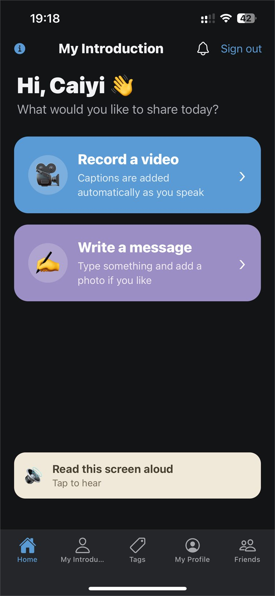

Research
Mind-Match-Cloud
An ongoing QLAB prototype that supports autistic users in preparing and recording self-introduction videos, with participant testing built into the iteration process.
- Autism
- HCI
- User Testing
- Communication Support
- Research Software
How the project is framed
The project is built around a specific task rather than a general claim. It does not start from the idea that autistic people need help being social. It starts from the observation that certain self-presentation situations, such as recording an introduction of yourself, can carry a high preparation cost for some people.
A structured, repeatable digital tool can lower that cost: the same flow every time, captions generated as you speak, the option to write instead of record, and a screen reader for anyone who would rather listen than read. Direct testing with autistic participants is what tells the team which of those choices actually helps and which ones get in the way.

The prototype home screen. Two clearly separated ways to respond, plus a read-aloud control, rather than one required path.
Participants in the loop
Testing with the intended users is part of the design process here, not a validation step bolted on at the end. The team plans and runs sessions with autistic participants to improve the software and to collect research data, so the people the tool is for are directly involved in deciding how it changes.
My involvement
I am part of the ongoing prototype work at QLAB as the team prepares and refines the participant-testing workflow.
Current status
Prototype, with planned and ongoing user testing. No outcome or effectiveness claim is made here, and nothing on this page should be read as evidence of clinical benefit.